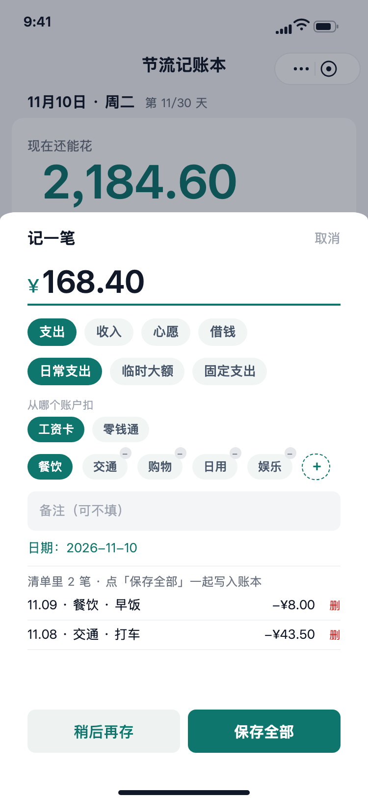

节流记账本
一个把周期预算折算成「今天还能花多少」的微信小程序。产品定义、交互、开发、测试和发布由我一人完成，目前是我自己每天在用的账本。
问题
我自己是第一个用户。几个存款账户，房租、宽带、话费按月扣，收入不按月发，账经常隔两天才补。
常见的记账工具月底给一张分类饼图，告诉我餐饮花了多少。中午要不要买那杯咖啡，它不回答。给一个整月预算也没用，月初宽松、月末紧绷，跟实际花钱的节奏对不上。房租一交，当月额度直接见底，剩下二十天全是红的；季付、年付的账单更没法看，不缴费的月是零，缴费的月一次记三个月。
所以这个产品只做一件事：把预算折成今天能花的数，让它每天都能拿来做决定。别的功能都围绕这一句。
判断
首页只放一个数
最早是整月预算减已花，月底算总账。数字没错，但帮不上中午那个决定。改成按天发额度后，首页这个数每天变一次，能直接用。代价是跨月周期、周期切换、上期结余并进来都得处理，同一类数字只能留一个计算出口。
固定支出和借钱不进日常额度
所有支出统一扣额度最好写，但房租一交，日常额度就废了。固定支出现在单走一套账，季付、年付按 N 个月摊进每月，非缴费月不可缴，预估和实付的差额在缴费月一次结清。代价是界面上出现两种「支出」，文案得说清哪个是哪个，不然会被当成漏记。
借钱同理。借出记支出、借入记收入看着顺，可资产搬家算成消费，会把「今年省了多少」弄脏。单独建台账，只动存款余额，不写收支流水。多一个页面，值得。
结余必须选去处
月底显示一行「本月结余」，用户什么也不用做，这个数就白算了。现在省了四选一、超了三选一，弹窗里不写劝人省钱的话。选完会改下期配额基数，月底这一步会真的改变下个月。
结算记录是落库快照，事后改账会跟它对不上，所以又补了一层重算。这是当时没想到的代价。
数字只有一个出口
这个项目最难的不是界面，是同一个「余额」在四处含义不同：周期末预估、截至今天、周期结转、攒钱目标。各写一套公式，最后一定和银行卡对不上。我立了一条规矩：余额类数字从同一处出，谁也不许另算。
界面上「现在余额」和「周期末预估」也分开，未来才到账的钱不算进今天。页面上的词定死，期初存款不叫「上月结余」，免得被当成一笔流水。这些不是措辞讲究，是账会不会算错的边界。
没做的
写在这儿，省得被当成遗漏：多人共享账本、银行自动同步、自动分类、自动计息、旅行模式、新手引导。前两个会掀掉现有账务口径，后几个的假设还没验证。
需求按小批次排，每条先写现状、为什么改、改完怎么退回来，想清楚才动手。
界面
主流程是设周期和预算、每天发额度、记一笔、周期结算、给结余选去处。选完反写下期配额，回到按天发额度。



其余 8 屏、11 张可导入 Figma / 墨刀的矢量稿在完整界面稿。画面里的金额、日期、账户名是演示数据。
验证
账是真的，我每天记。对不上银行卡时我先查口径，不改界面。有几类问题是这么翻出来的：未来到账的钱被算进了「现在余额」；同一笔收入在明细里显示、总积蓄里却不见；11 月 12 日的钱被标成 10 月 31 日。都是定义没说清，不是显示错。
需求多数来自使用现场。指图说「这条缝里露出了首页卡片」，质疑「11.12 的钱凭什么标 10.31」，要求「一个按钮把补记的账全存完」。每条都留了根因。
口径一改就跑一遍离线用例，覆盖配额、结转、结算、导出。这是我自己定的纪律，不是团队流程。
边界
这份案例能说明的：一个人把一个模糊的使用场景，收敛成一条可执行的口径，为它做了取舍，也承担了代价。难点在定义和一致性，不在页面数量。
不能说明的也直说。自用，未推广，累计用户、留存、营收、是否提交正式版审核，都没有可核验数据，这里不填估算。小程序目前是开发版本和体验版。面试要追问细节，仓库和需求台账可以当场打开核对。
复盘
判断错的比修好的值得写。补账入口改了四版：双胶囊、加标签、删标签并入清单、合并保存。回头看是没先定「入口放哪、一次存几笔」就动手。借出借入也一样，台账页做完了，设置页入口后来撤掉，这个页面现在接不到用户路径上——功能做完不等于用户能用上。
「余额截至」那次，我把快照基准日和显示日期混在一格，被当场问住。不是代码错，是定义没说清。
接着做，第一件事不是加功能。找三五个不是我的人真用一周，看「按天发额度」这个假设别人认不认。旅行模式、多人 AA、新手引导都压着，没验证之前不排期。
附件
界面稿是矢量重绘，不是截图。事实部分来自需求台账和提交记录。联系方式见简历。